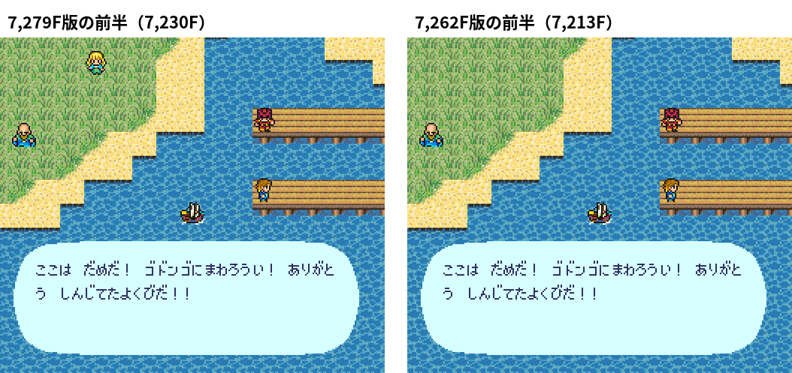
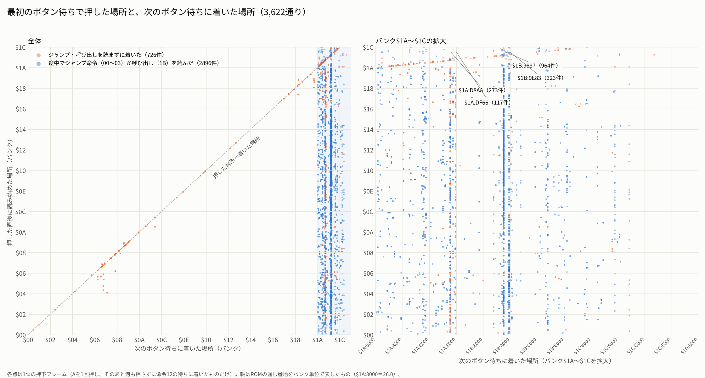
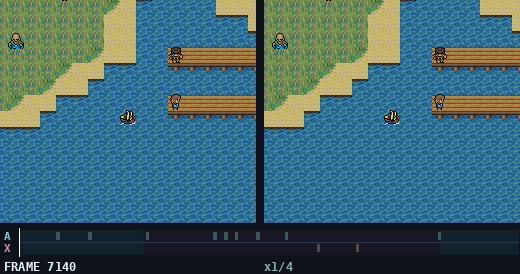

レイディバグは
なぜ起きるのか
港で10回追い返されると、ゲームが「どこまでスクリプトを読んだか」のメモを、プレイ時間を数えるタイマーと同じ場所に書いてしまいます。タイマーが進むたびにメモが書き換わり、関係のない場所のデータがイベントとして実行されます。
- 追い返されるたびに、読みかけのスクリプトのメモが1枚ずつ積まれる
- 12枚目のメモは、プレイ時間を数えるタイマーと同じ場所に置かれる
- タイマーが1フレーム進むごとに、読む場所が256バイト手前へずれる
- 押すタイミング次第で、戦闘もマップ移動もエンディングも起きる
バグが起きるしくみ
1〜6章。ここまで読めば、レイディバグがなぜ起きるかが分かります。
イベントは「スクリプト」を1バイトずつ読んで進む
セリフも、マップ移動も、戦闘の開始も、ROMに書かれた「スクリプト」というバイト列で指示されています。スクリプトとは、処理の手順を、命令と文字の並びで書いたデータのことです。セリフの文章だけでなく、ゲームを進める指示そのものが書かれています。ゲームはスクリプトを先頭から1バイトずつ読み、文字なら表示し、命令なら実行します。
港で追い返されるときに読まれるスクリプト（番号0x2E8）
スクリプトを実行しているのは、CPUではなくゲームのプログラム
スクリプトの命令は、開発者がこのゲームのために決めた独自のものです。スーパーファミコンのCPUはスクリプトの命令を知らず、スクリプトはCPUから見ればただのデータです。ゲームのプログラムの中に「スクリプトを1バイト読み、その値に応じた処理へ進む」という繰り返しがあり、それがスクリプトを解釈しています。（このような仕組みを「インタープリター」、解釈される命令の列を「バイトコード」といいます。）
| バイトの値 | 扱い | 例 |
|---|---|---|
| 00〜03 | ジャンプ命令（5章で説明） | 02 E8 |
| 04〜0F | マップ移動や戦闘など、フィールド側の処理を呼ぶ | 08 3F |
| 10〜4B | 命令。種類ごとに、続けて読む引数の数が決まっている | 12（ボタン待ち、1バイト）、1B 01 73（スクリプトを呼ぶ、3バイト）、47 18 D8 FF（メモリに書く、4バイト） |
| 4C〜FF | 文字。1バイトで1文字（漢字は 3F を前に付けて2バイト） | 93（こ）、A3（は） |
TASの経路では、レイディバグで狂うのは「どこをスクリプトとして読むか」だけで、CPUも、スクリプトを解釈するプログラムも、エンディングまで正常に動いています。ただし押し方によっては、でたらめな命令から不正な番地へのジャンプやスタックの破壊に進み、CPUがプログラムのある場所（ROM）ではなくRAMの中を命令として実行し続ける状態になることもあります（以下、本記事ではこれを暴走と呼ぶことにします。詳しくは10章「処理スクリプトと暴走」）。暴走すると、でたらめな書き込みでメモリが次々に壊れていきます。メモの上書きのように、CPUが正常に動いたまま値が書き換わるのとは別のものです。
追い返されるたびに、メモが1枚たまる
ゲームは、いま読んでいるスクリプトの「読む場所」を、1枚のメモに書いて持っています。1バイト読むたびにこのメモを見て、読んだら1つ進めて書き戻します。
スクリプトの途中で別のスクリプトを呼ぶと、新しいメモを1枚上に積み、そちらを使って読み進めます。下のメモは「呼んだところ」で止まったまま残り、呼んだスクリプトが終わると上のメモを捨てて、下のメモの続きに戻ります。つまり、いちばん上のメモがいつも「いま読んでいる場所」です（バグ中はこれが成り立たなくなります。「補足 ／ メモの裏側」で説明します）。（このように、あとから積んだものを先に取り出す記録方式を「スタック」といいます。）
追い返しでは、スクリプト0x2E8が「船で去る」スクリプト0x173を呼びます。ところがスクリプト0x173が終わる前に次の港に着き、次の港のイベントが始まってしまいます。スクリプト0x173は戻らず、スクリプト0x2E8の最後にある「メモを全部捨てる」命令は実行されません。
メモは1枚8バイトで、メモリの $129C から順に並びます。各段の横の番地が、そのメモの先頭です。メモは1枚目から数えています。ゲーム内部で入れ子の深さを表す変数（$129B）は0から数えるので、12枚目のときの値は11です。12枚目は $12F4 からで、その2・3バイト目（$12F5・$12F6）がタイマーと重なります。置ける枚数に上限の確認はありません。「作業用と共用」の印がある7〜11枚目の場所は、命令を処理するプログラムが計算の途中の値を一時的に置く場所でもあります。普段はメモが7枚も積まれないので、ぶつかりません（くわしくは「補足 ／ メモの裏側」）。
12枚目のメモは、タイマーの上に書かれる
メモは1枚8バイトで、中身は「読む場所の下位バイト・上位バイト・バンク（ROMの区画）」の3バイトと、スクリプトの終了位置2バイトです。残り3バイトは使われません。12枚目のメモは、積まれたあと「いま読んでいる場所」として使われ続け、バグ中の読み取りはすべてこのメモを見て行われます。その12枚目が置かれる場所は、もともとプレイ時間を数えるタイマーの場所でした。
タイマーが進むと、読む場所が256バイトずつ手前へ飛ぶ
上位バイトが1減ると、読む場所は256バイト手前に移ります。ボタン待ちで止まっている間もタイマーは進むので、何フレーム目に押すかで、次に読まれる場所が変わります。
待ち続けたときに読む場所（押すフレームごと）
フレームは、バグの発火（12枚目のメモが書き換わるフレーム）を0として数えています。TASの前半が縮んでも、発火した時点のゲームの状態が同じなら、発火からのフレーム数で見れば同じ関係が成り立ちます（前半を変えると、音楽の再生位置や音のCPUのずれ、17フレームで一周するフィールド処理のカウンタ（$181C）など、発火時点の状態が変わることがあります。6章のとおり、これらはバグ中の行き先を変えうるので、前半を変えたときは発火時点の状態がそろっているかを確かめる必要があります）。かっこ内は、いまのTASでのフレーム番号です。
最初の誤動作は、ボタンを押す前に起きている
バグが始まるのは、10回目の追い返しでスクリプト0x173が4番目の命令を実行した瞬間です。スクリプト0x173は6つの命令でできていて、1〜9回目と10回目では、問題の起きる場所が違います。
ここまでの流れ（5章の要点）
- 10回目の追い返しで、スクリプト0x194が12枚目のメモとして呼ばれる（タイマーと重なる）
- 0x194の最後にある
00 FF（スクリプト0xFFへジャンプ＝終了）を読み始める - ジャンプ命令は1バイト目と2バイト目の間に2フレームかかり、その間にタイマーが2進む
- 2バイト目は512バイト手前から読まれ、そこにあった値は
8F。00 8Fとして読まれる - 本来とは無関係なスクリプト0x8Fが始まり、ボタン待ちで止まる
スクリプト0x173の中身（$1A:FA42〜、17バイト）
| 順 | バイト列 | 内容 | 1〜9回目 | 10回目 |
|---|---|---|---|---|
| 1 | 0F F1 | フィールド側の処理を呼ぶ（未解読） | 実行 | 実行 |
| 2 | 47 18 D8 FF | 番地$18D8にFFを書く | 実行 | 実行 |
| 3 | 47 18 DA FF | 番地$18DAにFFを書く | 実行 | 実行 |
| 4 | 1B 01 94 | スクリプト0x194を呼ぶ（メモを1枚積む） | 呼んで、すぐ戻る | 12枚目のメモがタイマーの上に書かれる。ここでバグ発火 |
| 5 | 1E 14 | 演出0x14（約140フレーム） | 実行 | 実行されない |
| 6 | 1E 11 | 演出0x11 | 途中で次の港のイベントが始まり、戻らない。メモが1枚残る | 実行されない |
スクリプト0x194の中身（主人公ごとのブロック、条件判定 28 a b の読み方、4番目のブロックのアドレス）は付録Aにまとめました。
ここから先は「ジャンプ命令」（プログラムでいうgoto）が何度も出てきます。バグの動きを左右する命令なので、先に説明します。
ジャンプ命令とは
いま読んでいるスクリプトをやめて、別のスクリプトの先頭から読み始める命令です。表示するセリフを差し替える命令ではなく、読む場所を移すだけです。2バイトでできています。
- 書き換わるもの いまのメモの「読む場所」3バイト（下位・上位・バンク）と「終了位置」2バイトです。新しい値は、ROMの $1C:A620 から並んでいるスクリプトの一覧表を、スクリプト番号で引いて決まります。
- 順番とかかる時間 1バイト目を読む → 画面の更新を2フレーム待つ → 2バイト目を読む → メモを書き換える → 新しいスクリプトを読み始める、の順です。メモを書き換えるのは、2バイト目を読んだあとです。
ジャンプと呼び出し（1B）の違い、本来の使われ方、ジャンプ先の実例の表は付録Aにあります。
バグ中にジャンプ命令が特別な働きをする理由
- 2バイト目を、別の場所から読む 1バイト目と2バイト目の間に2フレームたつので、12枚目のメモでは読む場所が512バイト手前にずれます（ずれた先がバンクの下半分に入る場合は補正がかかり、次のバンクの上半分になります）。2バイト目は、スクリプトに書かれた値ではなく、ずれた先にたまたまあった値になります。行き先のスクリプト番号が、押すタイミングで変わるということです。
- 読む場所が大きく飛ぶ ふだんのずれは1フレームに256バイトずつ手前へ下がるだけです。ジャンプすると、いちばん上のメモ（バグ中は12枚目）の「読む場所」が、ジャンプ先スクリプトの先頭アドレスに書き換えられるので、離れた場所へ一気に移れます。12枚目のメモの読む場所はタイマーと同じ場所にあるので、このときタイマーの値も一緒に書き換わります。
12枚目として呼ばれたスクリプト0x194は、主人公に合ったブロックの最後にある「スクリプト0xFFへジャンプする」命令 00 FF で終わります。スクリプト0xFFは中身が「終了」だけの空のスクリプトで、本来はここで11枚目に戻るはずでした。
こうして無関係なスクリプト0x8Fが始まります。別のイベントのスクリプトで、並びは次のとおりです。
暗転してから最初のボタン待ちまで（10回目の追い返し）
| フレーム | 画面 | 裏で起きていること |
|---|---|---|
| 7,180 | 「ゴドンゴにまわろう」 | Aでセリフを送る。スクリプト0x2E8がスクリプト0x173を呼ぶ（11枚目のメモ） |
| 7,181〜7,194 | だんだん暗くなる | スクリプト0x173の1番目の命令。画面を暗転させている |
| 7,195 | 真っ暗 | 2〜4番目の命令。4番目でスクリプト0x194を呼び、12枚目のメモがタイマーの上に書かれる。スクリプト0x194は曲番号を選び、最後の 00 FF の1バイト目まで読む |
| 7,196 | 真っ暗 | ジャンプの準備で待つ。タイマーが進み、読む場所がずれ始める |
| 7,197 | 真っ暗 | 2バイト目をずれた場所から読み、スクリプト0x8Fが始まる。名前と6文字を書いて、ボタン待ちで止まる |
| 7,198〜 | 真っ暗 | ボタン待ち。1フレームごとに、押したときの行き先が256バイトずつ変わる。押下が受け付けられるのは7,200Fから |
| 7,215 | 真っ暗 | TASが最初のAを押す。$1A:A718 から読み始める（7章へ） |
このボタン待ちを何フレーム目に抜けるかが、プレイヤーが結果を左右できる最初の操作です。
フレームを使う命令のたびに、また飛ぶ
ずれるのはボタン待ちだけではありません。フレームを消費する命令は、どれも次に読む場所をずらします。1回押しただけで、スクリプトがあちこちへ飛び続けることがあるのはこのためです。
| 命令 | かかる時間 | 次に読む場所 |
|---|---|---|
ボタン待ち 12 | 押すまで | 待ったフレーム数 × 256バイト手前 |
ウィンドウ切り替え 10 11 | ふつうは2フレーム（11 は状態で変わる。下を参照） | ふつうは512バイト手前 |
ジャンプ命令 00〜03 | 2フレーム | 番号の2バイト目を、512バイト手前の別の場所から読む |
| 閉じたウィンドウへの最初の1文字 | 6フレーム（Xで5） | 1,536バイト手前（Xで1,280） |
「手前」のバイト数は、補正がかからない場合のものです。ずれた先がバンクの下半分に入るときは補正がかかり、読む場所は次のバンクの上半分に移ります（4章）。どの場合も、ROMに書かれた値は変わらず、読む場所だけが変わります。
同じジャンプ命令でも、行き着く先が同じとは限りません。命令によっては、かかるフレーム数がそのときの状態で大きく変わるからです。かかるフレームが違えば、その間にタイマーが進む分だけ次に読む場所がずれ、その先の行き先も変わっていきます。
例として、ウィンドウ切り替え 11 はふつう2フレームかかりますが、文字を一気に出すフラグ（$1686、命令 43 で立つ）がONだと、フレームを使わずに終わります。このフラグは、書き換えると実際に長さが入れ替わることを確かめています。また、ウィンドウの文字が最後の行まで埋まっていると、切り替える前にウィンドウを1行ずつ繰り上げます。1行につき3フレームかかるので、2行繰り上げると8フレームになります。どこまで埋まっているかは、直前にどれだけ文字を表示したかで決まります。そのウィンドウの今の行（$162F）を書き換えると、長さがそのとおりに変わることも確かめています。
| そのときの状態 | 11 にかかる時間 | $1A:8000 の 11 の次に読む場所 |
|---|---|---|
| 文字を一気に出すフラグがON（$1686＝0F） | 0フレーム | $1A:8001（ずれない） |
| ふつう | 2フレーム | $1B:FE01 |
| 文字が最後の行まで埋まっている（1行繰り上げ） | 5フレーム | $1B:FB01 |
| 同じく2行繰り上げ | 8フレーム | $1B:F801 |
フィールドの処理を待つ命令 0F も、かかる時間が変わります。フィールドの処理は、0〜16を毎フレーム1ずつ数えて17フレームで一周するカウンタ（$181C）を持っていて、0F をこの周期のどこで読んだかで、待つ長さが変わります。$181C を書き換えると長さが変わり、同じジャンプ先から行き先が分かれた組を14組試したうちの10組では、$181C の1バイトを書き写すだけで行き先が入れ替わりました。ウィンドウを作り直す命令 13 は、ふだん2フレームですが、98フレームか146フレームかかることもあります。どちらになるかは $1290 で決まり、0なら146フレーム、0以外なら98フレームでした（書き換えて両方向に確認）。$1290 は、スクリプトの命令 3E を読むたびに反転する値です。最初のボタン待ちを押すフレームを7,198F〜14,042Fで変えて試したところ、12枚目のメモで同じジャンプ先に飛び、3回以上観測できた317のジャンプ先のうち、95か所でその後の行き先が分かれました。
分かれる原因はゲームのRAMの中だけとは限りません。音を担当する別のCPUの状態でも行き先が変わることがあります。これは下のコラムで詳しく扱います。
音のCPUが、バグの行き先を変える
スーパーファミコンには、ゲームを動かす本体のCPUとは別に、音を担当するCPUがあります。2つのCPUは別々の時計で動き、決まった4つの窓口（ポート）を通して合図をやりとりします。本体側は「この効果音を鳴らして」と書き込み、音のCPUが受け取ったという返事を書き返すまで待つ、という作りです。
イベントのスクリプトにも、この待ちを含む命令があります。効果音を鳴らす命令 0B は、音のCPUに合図を送り、返事が来るまで待ちます。普段のプレイでは返事がいつ来ても誰も気づきません。しかしレイディバグ中は、12枚目のメモの読む場所がタイマーと重なっています。返事が遅れて処理が1フレームずれると、次に読む場所が256バイト変わり、その先の行き先がまるごと変わります。
実験：何を書き写すと行き先が入れ替わるか
- 最初のボタン待ちを押すフレームだけが違う2つの記録で、どちらも $1A:B469 へジャンプしたのに、その後の行き先が分かれる例を見つけました。片方は150フレーム目に $1B:9E83 を読み、もう片方は151フレーム目に $1B:9D83 を読みます。差は1フレームです。
- ジャンプした時点で、片方の状態をもう片方へ書き写しました。ゲームのRAM（WRAM）、画面のメモリ、本体のCPUのレジスタをすべて書き写しても、行き先は入れ替わりませんでした。
- エミュレーターが持つ「音のCPUの時計」（本体のCPUとどれだけずれて動いているか）を書き写すと、行き先が入れ替わりました。
- この時計の値を少しずつ変えて試すと、「返事が遅れて1フレームずれる値」と「遅れない値」は、それぞれひと続きの区間になっていました。区間の境目の位置は、音のCPUのメモリの中身などで変わりました。
ここから読み取れること
- ゲームのRAMだけでは、バグ中の行き先は決まらない。 本体側のメモリがまったく同じでも、音のCPUとのずれ方が違えば、別の場所へ飛ぶことがあります。逆に言えば、行き先が分かれる原因を探すときは、本体側のメモリだけを比べても見つからない場合があります。
- 前半の操作が、遠く離れたバグ中の経路に響きうる。 2つのCPUのずれ方は、それまでに何フレーム経ったか、いつ曲や効果音が鳴ったかで変わります。そのため、前半を1フレーム詰めただけで、後半の押し方が通らなくなることがありえます。
- ほかのバグ技ではあまり表に出ない要素が、結果を左右する。 普段のゲームでは、効果音の返事が1フレーム遅れても見た目は変わりません。この影響が見えるのは、タイマーの1フレームが読む場所の256バイトに直結するレイディバグならではです。
- 実機では、エミュレーターと同じようには再現しないかもしれない。 実機では2つのCPUが別々の発振器で動いていて、そのずれ方は本体ごと・電源を入れるたびに同じとは限りません。この記事の結果はすべてエミュレーター（BizHawk 2.11.1、BSNESv115+）上のもので、実機での再現性は確かめていません。
乱数と歩行のカウンタも、バグの行き先を変える
前のコラムでは、音のCPUとのずれがバグ中の行き先を変える例を見ました。前半を変えると後半が通らなくなる道筋は、もう1つ見つかっています。7,262F版の前半で実際に起きた例です。
8章の入口の押し方を、7,262F版の前半のあとに、発火からのフレーム数をそろえて流しました。すると8つのうち4つ（$1A:BB57、$1B:B280、$1B:AE33の1つ目、$1A:E3F8）はエンディングに入りませんでした。こちらの原因は音のCPUではなく、本体の処理時間でした。

- もとをたどると、違いは3バイトだけ。 発火の94フレーム前、10回目に港へ着いた時点で比べると、人物の位置はどちらの前半でも同じ値に戻っていました。違っていたのは、乱数の状態（$1210・$1211）と、人物が歩くときに1〜8を数えるカウンタ（$181D）の3バイトです。この3バイトを7,279F版の値に書き写してから流すと、発火の時点のWRAMは5バイトを除いて7,279F版と一致し、4つとも7,279F版と同じフレームにエンディングへ入りました。発火の時点で書き写す場合は、人物の位置や向きまで含めた8バイト（$1138〜$113C、$1447〜$1448、$181D）が必要でした。到着から発火までのあいだに、乱数の違いが人物の歩き方の違いに変わっているためです。
- 乱数とカウンタは、役割が違う。 乱数だけを合わせると、人物の位置と向きは7,279F版と同じになりますが、4つとも通りませんでした。カウンタだけを合わせると、$1A:E3F8 の1つだけが通りました。残りの3つは、両方を合わせて初めて通ります。
- この3バイトが違うと、メインの処理の区切りがずれる。 ゲームのメインの処理は、フィールドの処理とスクリプトの処理などを1周して、画面の更新を待ちます。1周にかかる時間は1〜3フレームとばらつきます。2つの前半ではこの区切りの位置が違っていて、上の値を書き写すとそろいました。人物ごとの処理（バンク$01の $D840〜$E400 あたり）が実行される回数が違うことまでは確かめましたが、その処理が何をしているかは読み解けていません。
- 区切りがずれると、2通りの形で行き先が変わる。 1つは、スクリプトを読み始める時点がフレームの後ろへずれ、ウィンドウ切り替え
10などの重い処理が画面の更新をまたぐ形です（$1B:AE33の1つ目・$1A:BB57・$1B:B280）。$1B:AE33の1つ目では、Aのあとの読み始めが約65,500サイクル遅れ、漢字のあとの処理がフレームの終わり（約357,000サイクル）を越えたため、次に読む場所が $1B:F687 から $1B:F587 にずれました。もう1つは、メインの処理の1周が画面の更新の直前にかかって次のフレームへはみ出し、そのフレームでスクリプトの処理が1回も動かない形です（$1A:E3F8）。ボタン待ちに入ったままなのに、その1フレームだけ押したAが確認されず、次のフレームのXで抜けることになります。
前半のどこでずれたか 乱数は、ゲームが呼んだときにだけ進みます。発火までに呼ばれた回数は、7,279F版が5,074回、7,262F版が5,031回でした。差がついた場所は2つあります。
- 海賊の町を出る直前。 7,279F版にある5回の呼び出しが、7,262F版にはありません。なぜなくなるのかは、まだ追えていません。
- 港で追い返されるのを繰り返す場面。 1回の待ちが111フレームのときは、乱数が20回呼ばれ、歩行のカウンタが1つ進みます。110フレームに詰めた回は、呼ばれるのが12〜15回になり、カウンタは進みません。たった1フレームの短縮が、乱数の進み方を変えていました。
音のCPUの例と合わせると、「前半を1フレーム変えただけで、後半の押し方が通らなくなる」道筋が少なくとも2つあることになります。1つは音のCPUとのずれ、もう1つは、乱数と歩行のカウンタの違いからくる処理時間の違いです。8章の押し方を前半の違う版で使うときは、通しで流して確かめる必要があります。
Xボタンは、ボタン待ちを抜ける働きが違うのではありませんでした。ウィンドウを開く途中の特定の1フレームでXが押されていると、開く時間が1フレーム縮みます。12種類のボタンで試して、縮むのはXだけでした。1フレーム縮めば、その後の行き先が256バイト変わります。
押す場所が変わっても、着く場所は限られている

12 の待ちに着いたものだけを数えています。TASはどう使ったか
7〜8章。7,279F版の経路と、ほかのエンディングの入口。その後の7,262F版は前半を17フレーム詰めたもので、バグ発火後の8回の押下は7,279F版と同じ並びのまま、すべて17フレーム早くなっています（発火からのフレーム数で見れば同じ経路です）。
7,279F版TASは、本物のエンディングスクリプトの最後の2バイトを読ませている
7,279F版は8回の押下と3回のジャンプで、エンディング演出のスクリプト（番号0x277）の最後にある 40 70（エンディング開始）へ、ちょうど読む場所を合わせています。
概略版
| 入力 | 読み始めた場所 | 起きたこと |
|---|
フレームごとの全記録を見る（詳細版：最初のAからエンディングまで）
読む場所の決まり方 次に読む場所は、直前に読んだ場所から次のように決まります。色つきの行が、その計算です。
- 上位バイト＝直前に読んだ場所の上位バイト − その間にたったフレーム数（タイマーが1フレームに1ずつ減らすため）
- 下位バイト＝直前に読んだ場所の下位バイト ＋ 1（1バイト読み進めるため）
- ジャンプ命令のときだけ、12枚目のメモの「読む場所」が、ジャンプ先スクリプトの先頭アドレスに書き換えられます。このアドレスはスクリプト番号から表で引かれ、タイマーとは関係ありません
- 同じフレームの中で続けて読む文字や命令は、読んだバイト数だけ下位バイトが進みます。文字は1つ1バイト、漢字は2バイト、命令は「命令の1バイト＋引数の数」です
| フレーム | 入力 | 読む場所 | 読む場所の理由と、裏で起きていること |
|---|---|---|---|
| 7,215 | A | $1A:A718 | 直前のボタン待ちは $1A:B917（7,197Fに読んだ ボタン待ちを抜ける。「れたな！」の4文字を書いて4バイト進み（$1A:A718〜A71B）、次の $1A:A71C の 12）。そこから18フレーム（16進で12）たったので、上位は B9−12＝A7。下位はボタン待ちの次で 17＋1＝1812 でボタン待ち |
| 7,216〜7,217 | ボタン待ち | ||
| 7,218 | A | $1A:A41D | 直前のボタン待ちは $1A:A71C（7,215F）。3フレームたったので、上位は A7−3＝A4。下位は 1C＋1＝1D 「さか」（2バイト）、記号2つ（2バイト）、名前の表示 2D BB（2バイト）、漢字1文字（2バイト）、「が」（1バイト）、記号2つ（2バイト）で計11バイト進み、次の $1A:A428 の 12 でボタン待ち |
| 7,219〜7,220 | ボタン待ち | ||
| 7,221 | A | $1A:A129 | 直前のボタン待ちは $1A:A428（7,218F）。3フレームたったので、上位は A4−3＝A1。下位は 28＋1＝29 行送り 24（1バイト）、記号を1つ書く 2F 28（2バイト）、「ビ」（1バイト）で計4バイト進み、次の $1A:A12D でジャンプ命令の1バイト目 00 を読む |
| 7,222 | ジャンプの準備で待つ | ||
| 7,223 | $1A:9F2E | ジャンプ命令の1バイト目は $1A:A12D（7,221F）。2バイト目を読むまでに2フレームたったので、上位は A1−2＝9F。下位は 2D＋1＝2E。ここにあった値 8B がスクリプト番号になる。ジャンプ後の $1A:B819 はスクリプト0x8Bの先頭アドレスで、タイマーとは関係なく表から決まる 2バイト目として 8B を読む。スクリプト0x8B（$1A:B819）へジャンプする。記号、空白、「あのおとぎばなしの」、記号の12文字を書いて12バイト進み、次の $1A:B825 の 12 でボタン待ち | |
| 7,224〜7,226 | ボタン待ち | ||
| 7,227 | A | $1A:B426 | 直前のボタン待ちは $1A:B825（7,223F）。4フレームたったので、上位は B8−4＝B4。下位は 25＋1＝26 「ほうびを とらせよう」の10文字を書いて10バイト進み、次の $1A:B430 の 12 でボタン待ち |
| 7,228〜7,234 | ボタン待ち | ||
| 7,235 | A | $1A:AC31 | 直前のボタン待ちは $1A:B430（7,227F）。8フレームたったので、上位は B4−8＝AC。下位は 30＋1＝31 「ャ」を書いて1バイト進み、次の $1A:AC32 でジャンプ命令の1バイト目 00 を読む |
| 7,236 | ジャンプの準備で待つ | ||
| 7,237 | $1A:AA33 | ジャンプ命令の1バイト目は $1A:AC32（7,235F）。2フレームたったので、上位は AC−2＝AA。下位は 32＋1＝33。ここにあった値 A2 がスクリプト番号になる。ジャンプ後の $1A:C098 はスクリプト0xA2の先頭アドレス 2バイト目として A2 を読む。スクリプト0xA2（$1A:C098）へジャンプする。漢字を1文字書く（$1A:C098〜C099 の2バイト） | |
| 7,238〜7,239 | 文字の表示に3フレームかかる（理由は未確認） | ||
| 7,240 | $1A:BD9A | 直前に読んだのは漢字の2バイト目 $1A:C099（7,237F）。表示に3フレームかかったので、上位は C0−3＝BD。下位は 99＋1＝9A 「ち」（1バイト）、条件判定 28 45 0E（3バイト。判定の結果、次の2バイトも読み飛ばす）、条件判定 28 42 0E（同じく3バイトと、読み飛ばし2バイト）、名前の表示（2バイト）、「のため」（3バイト）、記号（1バイト）で計17バイト進み、次の $1A:BDAB の 11 でウィンドウを切り替える | |
| 7,241 | ウィンドウ切り替えで待つ | ||
| 7,242 | $1A:BBAC | 直前に読んだのは $1A:BDAB の 記号を1つ読む（1バイト）。切り替え先のウィンドウが閉じているので、開き始める11（7,240F）。ウィンドウ切り替えの2フレームで、上位は BD−2＝BB。下位は AB＋1＝AC | |
| 7,243〜7,246 | X 7,244 | ウィンドウを開いている最中。7,244FのXで、6フレームかかるところが5フレームで済む | |
| 7,247 | $1A:B6AD | 直前に読んだのは $1A:BBAC の記号（7,242F）。ウィンドウを開くのに5フレームかかったので、上位は BB−5＝B6。下位は AC＋1＝AD。Xを押さなければ6フレームで、 「ある」（2バイト）のあと、1B 01 F8（3バイト。$1A:B6AF〜B6B1）でスクリプト0x1F8（$1B:8A4D）を呼ぶ（13枚目のメモ）。13枚目では、条件判定 28 40 0E（3バイトと、読み飛ばし2バイト）、「の」（1バイト）、条件判定 28 44 FF（3バイト。読み飛ばしなし）で計9バイト進み、次の $1B:8A56 で 00 FF の1バイト目を読む | |
| 7,248 | ジャンプの準備で待つ | ||
| 7,249 | $1B:8A57 | ここは13枚目のメモで読んでいる。13枚目はタイマーと重なっていないので、2フレームたっても上位はずれず、1バイト目 $1B:8A56 のすぐ次を読む 2バイト目の FF を正しく読む。13枚目のメモはタイマーと重なっていないので、ずれない。空のスクリプト0xFFが終わり、12枚目に戻る | |
| 7,250 | 戻る処理で待つ。13枚目にいた4フレームの間も、12枚目の読む場所はずれ続けている | ||
| 7,251 | $1A:B2B2 | 12枚目で最後に読んだのは、呼び出し命令の引数 $1A:B6B1（7,247F）。13枚目にいた間も含めて4フレームたったので、上位は B6−4＝B2。下位は B1＋1＝B2 11（1バイト）でウィンドウを切り替える | |
| 7,252 | ウィンドウ切り替えで待つ | ||
| 7,253 | $1A:B0B3 | 直前に読んだのは $1A:B2B2 の 記号を1つ読む（1バイト）。閉じているウィンドウを開き始める11（7,251F）。2フレームたったので、上位は B2−2＝B0。下位は B2＋1＝B3 | |
| 7,254〜7,257 | X 7,255 | ウィンドウを開いている最中。7,255FのXで、ここも5フレームで済む | |
| 7,258 | $1A:ABB4 | 直前に読んだのは $1A:B0B3 の記号（7,253F）。ウィンドウを開くのに5フレームかかったので、上位は B0−5＝AB。下位は B3＋1＝B4。Xを押さなければ $1A:AAB4 になっていた フラグの判定 3A 1E 01（3バイト。読み飛ばしなし）で3バイト進み、次の $1A:ABB7 でジャンプ命令の1バイト目 02 を読む | |
| 7,259 | ジャンプの準備で待つ | ||
| 7,260 | $1A:A9B8 | ジャンプ命令の1バイト目は $1A:ABB7（7,258F）。2フレームたったので、上位は AB−2＝A9。下位は B7＋1＝B8。ここにあった値 A2 と1バイト目の 02 を合わせて、スクリプト番号は 0x2A2。ジャンプ後の $1B:C669 はスクリプト0x2A2の先頭アドレス 2バイト目として A2 を読む。スクリプト0x2A2（$1B:C669）へジャンプし、バンク$1Bに入る。名前の表示（2バイト）、「には 」（3バイト）、名前の表示（2バイト）、「という」（3バイト）で計10バイト進み、次の $1B:C673 の 10 でウィンドウを切り替える | |
| 7,261 | ウィンドウ切り替えで待つ | ||
| 7,262 | $1B:C474 | 直前に読んだのは $1B:C673 の 「ん」を書く（1バイト。表示に2フレームかかる）10（7,260F）。2フレームたったので、上位は C6−2＝C4。下位は 73＋1＝74 | |
| 7,263 | 文字の表示で待つ | ||
| 7,264 | $1B:C275 | 直前に読んだのは $1B:C474 の「ん」（7,262F）。表示に2フレームかかったので、上位は C4−2＝C2。下位は 74＋1＝75 12 でボタン待ち。下位バイトが75の位置で止まるのが、この経路の要点 | |
| 7,265〜7,277 | ボタン待ち。上位がC2からB4まで減るのを待つ | ||
| 7,278 | A | $1B:B476 | 直前のボタン待ちは $1B:C275（7,264F）。14フレーム（16進で0E）たったので、上位は C2−0E＝B4。下位は 75＋1＝76 40 70 を読む。エンディング開始 |
暗転の裏側
画面が真っ暗なのは、直前の演出で画面の明るさが0にされたままだからです。エミュレーターで明るさだけを元に戻すと、裏で描かれている画面が見えます。

エンディングの入口は、ほかにもある
エンディングの始め方は、仕組みの上で2通り考えられます。方法① スクリプトの命令 40 70 か 40 6F を読ませると、方法② スクリプトを経由せず、エンディングの処理を直接呼ばせるです。TASが使ったのは方法①で、狙える場所は $1B:B476 のほかにもいくつもあります。この章では、方法①で狙える場所と、実際に届いた経路をまとめます。方法②はまだ成功していないので、11章の研究課題に回します。
方法①：エンディングを呼ぶ条件
エンディングを始める副命令は2つあり、どちらを読ませても入力なしでエンディングの最後まで進みます。
| 副命令 | 飛び先 | 始まる場面 |
|---|---|---|
40 70 | $03:800F | 風景とスタッフロール |
40 6F | $03:800C | 城と港の会話（エピローグ）。無入力のまま進み、エピローグのスクリプトの最後にある 40 70（$1B:B1BE）を読んで、そこから先は 40 70 と同じになる。$1A:BB57 の経路では、7,289Fに 40 6F を読み、710フレーム後の7,999Fにこの 40 70 を読む |
ムービーの長さは最後の入力で決まるので、どちらの入口も同じ条件で比べられます。この並びがある場所に読む場所を合わせれば、エンディングが始まります。読む場所は直接指定できないので、「決まった下位バイトのボタン待ちに止まる」ことが本質的な条件です。止まったあとは、待つフレーム数で上位バイトを合わせます。ただし、その待ちに入った時点のタイマーから下がっていく途中に、狙う場所が来る場合に限ります（下の表の条件2）。
| 条件 | 内容 | 例：TASの $1B:B476（40 70） |
|---|---|---|
| 1. 下位バイト （これが難関） | 40 の位置の下位バイトより1小さい位置にあるボタン待ちで止まる（押すと次の位置から読む）（場所によっては2小さい位置でもよい。下の表） | 3回ジャンプして、下位バイトが75の |
| 2. 押すフレーム | 読む場所の上位バイトが 40 の位置と同じになるフレームで押す。同じバンクで上位が大きければ、減るのを待つ。ただしタイマーは減る一方なので、届くのは「その待ちに入った時点のタイマーより下」の場所だけ。補正（4章）があるので1つの場所を通る機会は最大2回で、タイマーが0になって3,600に戻ったあとは、スクリプトのあるバンクにはもう届かない | C2からB4まで減るのを14フレーム待ってAを押す |
狙える場所と、止まればよいボタン待ちの候補
スクリプトの領域にある 40 70・40 6F の並びと、それぞれについて、必要な下位バイトの位置に 12（ボタン待ち）がある場所の数です。たとえば $1B:B476 を狙う場合の候補は5か所です（$1A:8775、
ただし、候補の 12 で止まっても、それが12枚目のメモでなければ読む場所はタイマーでずれず、待っても狙えません。右端の列は、その候補で12枚目のメモのまま止まったことがあるものです。括弧内は、1回だけ押した場合（1回目の押下は7,198〜17,640F）に初めて止まった1回目の押下で、括弧のないものは2回以上押す経路で止まったものです。「—」や載っていない候補は、届かないと決まったわけではなく、2回以上押す経路はすべては確かめていません（TASは $1B:C275 に、何回か押して12,033Fより早く止まっています）。
| 狙う場所 | 並び | 必要な下位バイト | 候補（$1A） | 候補（$1B） | 候補（$1C） | 12枚目のメモで止まった候補 |
|---|---|---|---|---|---|---|
| $1A:BB57 | 40 6F | 56 | 4 | 1 | 1 | $1A:A056（9,215F〜） |
| $1A:E3F8 | 40 70 | F7 | 3 | 1 | 0 | — |
| $1B:AE33 | 40 70 | 32 | 4 | 2 | 1 | $1A:8332（7,950F〜） $1A:8632（9,184F〜） |
| $1B:AF88 | 40 70 | 87 | 4 | 0 | 3 | — |
| $1B:B0B3 | 40 70 | B2 | 2 | 0 | 0 | $1A:B6B2（7,387F〜） |
| $1B:B0B3 1つ手前の $1B:B0B2 から | 80 40 70 | B1 | 2 | 4 | 0 | $1A:90B1（10,980F〜） $1B:A7B1（7,908F〜） $1B:DCB1（10,444F〜） $1B:B6B1 |
| $1B:B1BE | 40 70 | BD | 5 | 1 | 0 | $1A:8EBD（10,979F〜） |
| $1B:B1BE 1つ手前の $1B:B1BD から | 80 40 70 | BC | 3 | 1 | 0 | $1A:A8BC（8,483F〜） |
| $1B:B1BE $1B:B3BD から2フレームずれて着地 | 15 | BC | 3 | 1 | 0 | $1A:A8BC（8,483F〜） |
| $1B:B1BE $1B:B3BC から2フレームずれて着地 | F1 15 | BB | 4 | 2 | 0 | $1B:E6BB（9,957F〜） |
| $1B:B280 | 40 70 | 7F | 2 | 5 | 1 | $1A:C77F（7,395F〜） $1B:E07F（8,755F〜） |
| $1B:B280 1つ手前の $1B:B27F から | 80 40 70 | 7E | 5 | 2 | 1 | $1A:807E（13,756F〜） $1A:E47E（10,139F〜） $1B:C77E |
| $1B:B3C2 | 40 70 | C1 | 1 | 0 | 0 | — |
| $1B:B3C2 1つ手前の $1B:B3C1 から | 60 40 70 | C0 | 5 | 2 | 2 | $1A:C4C0（8,758F〜） $1C:8EC0（12,083F〜） |
| $1B:B476 | 40 70TAS | 75 | 2 | 3 | 0 | $1A:8775（7,322F〜） $1B:8C75（9,378F〜） $1B:C275（12,033F〜） |
| $1B:B476 1つ手前の $1B:B475 から | 70 40 70 | 74 | 4 | 2 | 1 | $1A:FB74（12,884F〜） |
| $1D:CE4D | 40 6Fデータの中の偶然の並び | 4C | 2 | 1 | 1 | — |
40 6F（直前は暗転とウィンドウを閉じる命令）、$1B:B476 は本物のエンディング演出のスクリプト（0x277）の最後にある 40 70 です。同じ並びなら、どの場所に合わせても同じ処理が選ばれます。命令 40 は次のバイトの最上位ビットを無視するので、40 F0 は 40 70、40 EF は 40 6F と同じ処理が選ばれます（番号を2倍した下位8ビットが、どちらも同じになるためです。そのあとの状態まで同じになるとは限りません）。バンク$19〜$1Bにある 40 F0・40 EF は $19:942D の1か所だけです。候補の場所は、
40 の1つ手前のバイト（文字1つ分の命令）を同じフレームのうちに読み終えて 40 に届く入り方です。「2フレームずれて着地」の行は、2フレームかかる命令 15 を読み終えたときに読む場所が0x200ずれて、ちょうど 40 の位置に着く入り方です。同じボタン待ちから $1B:B1BD を狙うより、最後の入力が2フレーム早く済みます。どの行も、実際の押し方でエンディングの最後の画面まで進むことを確かめました（$1B:B0B2 は8章の $1B:B0B3 の経路で $1A:90B1 から、$1B:B27F は $1A:807E から13,756F・13,912FにA、$1B:B3C1 は $1A:C4C0 から8,758F・8,913FにA、$1B:B475 は $1A:FB74 から12,884F・13,091FにA、$1B:B1BD は $1A:A8BC から8,483F・8,606FにA、$1B:B3BD は同じく8,483F・8,604FにA、$1B:B3BC は $1B:E6BB から10,654F・10,737FにA）。値が 12 でも別の命令の引数やスクリプトでないデータの場合があり、そこに命令の先頭として行き着く道筋があるかは場所ごとに探す必要があります。少し手前に入っても、間の命令を読み進んで 40 に届く場合がありますが、途中でフレームを使う命令があると読む場所がまたずれます。$1D:CE4D や、その数バイト手前の $1D:CE47〜CE49 から入る道もありますが、12枚目のメモのずれは番地を下げる向きにしか進まないので、バンク$1Dには $1C のスクリプトへジャンプしてからでないと届かず、実際の押し方は見つかっていません。方法①の実例：実際に届いた入口
TASが使う $1B:B476 のほかに、7か所の入口で実際に届く押し方を確かめました（40 70 が6か所、40 6F が1か所）。最後の入力はどれもTAS（7,278F）より遅く、最も近いのは 40 6F の $1A:BB57（7,289F、11フレーム差）です。表は最後の入力が早い順です。
押し方は、すべて押したフレームとボタンで書いています。フレームは入力ファイルの行の番号（0始まり）で、ここに書いたボタンを1フレームずつ押し、ほかのフレームは何も押しません。
| 入口 | 押し方（押したフレームとボタン） | 押す回数 | 最後の入力（発火から） |
|---|---|---|---|
| $1B:B476 40 70・TAS | 7,215F A、7,218F A、7,221F A、7,227F A、7,235F A、7,244F X、7,255F X、7,278F A | 8 | 83 TASでは7,278F |
| $1A:BB57 40 6F | 7,231F X、7,239F B、7,247F X、7,249F X、7,251F A、7,259F X、7,261F A、7,262F X、7,264F A、7,265F X、7,272F A、7,289F A | 12 | 94 TASでは7,289F |
| $1B:B280 40 70 | 7,203F A、7,212F A、7,233F A、7,249F A、7,254F A、7,256F A、7,258F X、7,261F A、7,262F B、7,264F A、7,265F X、7,275F A、7,321F A | 13 | 126 TASでは7,321F |
| $1B:AE33 40 70 | 7,231F X、7,239F B、7,247F X、7,249F X、7,251F A、7,259F X、7,261F A、7,262F X、7,264F A、7,269F A、7,271F A、7,272F X、7,328F A | 13 | 133 TASでは7,328F |
| $1B:B0B3 40 70 | 7,209F A、7,217F A、7,226F A、7,328F A | 4 | 133 TASでは7,328F |
| $1B:AE33 40 70・押す回数が最少 | 7,205F A、7,251F A、7,336F A | 3 | 141 TASでは7,336F |
| $1B:B1BE 40 70 | 7,205F A、7,216F A、7,226F A、7,233F A、7,242F A、7,247F A、7,253F A、7,267F A、7,281F A、7,292F A、7,342F A、7,353F A | 12 | 158 TASでは7,353F |
| $1A:E3F8 40 70 | 7,214F A、7,216F A、7,233F X、7,243F A、7,249F X、7,253F A、7,254F X、7,256F A、7,259F A、7,263F A、7,266F A、7,267F X、7,270F A、7,271F X、7,445F A | 15 | 250 TASでは7,445F |
| $1B:AF88 40 70 | 7,209F A、7,216F A、7,237F A、7,249F A、7,252F A、7,466F A | 6 | 271 TASでは7,466F |
40 70 の経路は、どれも最後のAを押したフレーム、または数フレーム後にエンディングの処理（$03:8D63）へ入ることを、最初から通しで実行して確かめました。40 6F の経路（$1A:BB57）は、7,289Fに 40 を読んでエピローグから始まり、エンディングの処理に入るのは7,999Fです。$1A:BB57・$1B:B280・$1B:AE33の1つ目・$1A:E3F8・$1B:AF88 の経路は、別のチャットで行った探索（文字の表示中のXを含む）の結果を、こちらで最初から通しで実行して確かめたものです。X は、ボタン待ちではなく、文字を書いている途中で押すものです（TASの7,244F・7,255F など）。B はボタン待ちで押していて、A と同じくボタン待ちを抜けます。$1A:BB57 と $1B:AE33 の1つ目の経路は、もとの探索結果では7,199FにもAを押していましたが、最初のボタン待ちが押下を受け付けるのは7,200Fからなので（5章）、このAは何も起こしません。外しても同じフレームにエンディングへ入ることを確かめたので、表からは外しています。$1B:AE33 へ入る2つ目の経路は押下が3回で、見つかっている中で最も少ない操作です。$1B:B1BE の経路は、ランダムに押した試行でたまたま見つかったものを、必要な押下だけに絞りました。これらの押し方は7,279F版の前半を前提にしています。7,262F版の前半のあとに、発火からのフレーム数をそろえて流すと、$1B:B0B3、$1B:AE33の2つ目、$1B:B1BE、$1B:AF88 は同じように入りましたが、残りの4つは入りませんでした（コラム）。さらに分かったこと
9〜11章。研究で分かった細かな仕組みと、残っている課題。
メモは、12枚目以外も壊れる。枚数の数字もあてにならない
ここまでは12枚目のメモとタイマーの重なりだけを見てきました。バグを起こしたあと自由に操作した記録を調べると、メモのまわりではほかにも3つのことが起きていました。エンディングへの最短手順には関係しませんが、バグ中の「変な挙動」の多くはこれで説明できます。
終了位置は、ぴったり重なったときだけ働く
メモの4〜5バイト目は、スクリプトの終了位置です。ゲームは命令を1つ処理し終えるたびに読む場所を1つ進め、その結果が終了位置とぴったり同じかどうかを調べます（$00:A3D3〜）。同じならスクリプトは終わり、違えば次の命令を読みます。「終了位置を越えたか」は見ていません。
12枚目では読む場所のほうがタイマーで動くので、終了位置と重なることがまずありません。バグ中の読み取りが、スクリプトの切れ目を無視して延々と続くのはこのためです。逆に、読む場所が無事でも終了位置のほうが壊れれば、同じことが起きます。
7〜11枚目のメモは、命令の作業用の値で上書きされる
命令を処理するプログラムは、計算の途中の値を置く場所として $12CC〜$12F1 のあたりを使います。ここは7〜11枚目のメモの置き場所でもあります。普段はメモが7枚も積まれないので問題になりませんが、バグ中は命令を読むたびに下のメモが壊れていきます。12枚目とタイマーの重なりと、同じ種類の現象です。
| 書かれる番地 | メモのどこにあたるか | 書く処理 |
|---|---|---|
| $12CC | 7枚目の読む場所（下位） | 計算結果の保存（$00:BD59） |
| $12CE〜$12D7 | 7枚目のバンクと終了位置、8枚目の読む場所 | 数値を桁ごとに分けて並べる処理（$00:B7E9） |
| $12DF〜$12E0 | 9枚目の終了位置 | 値の一時保存（$00:DAC1） |
| $12E4〜$12E5 | 10枚目の読む場所 | $00:9FA6 付近 |
| $12ED〜$12EF | 11枚目の読む場所（上位・バンク）と終了位置（下位） | $00:9F61〜9F6B |
| $12F0 | 11枚目の終了位置（上位） | 20から1ずつ減らす待ちのカウンタ（$00:BAF1〜） |
表は、実際に上書きを記録できた場所だけです。たとえば10枚目は、読む場所が $1B:D6C3 から $1B:0000 に変わりました。1〜6枚目の上書きは、調べた記録の中では起きていません。そこを作業用に使う命令がないのかどうかは、まだ分かっていません。
枚数の数字が1でも、積まれたメモは読まれ続ける
2章では「いちばん上のメモが、いま読んでいる場所」と説明しました。普段はそのとおりですが、バグ中は成り立たなくなります。スクリプトを読む処理は、追い返しのたびに入れ子で呼び出されているからです。
追い返しでは「スクリプト → フィールド側の処理 → 次の港のスクリプト」と呼び出しが1段ずつ深くなります。外側の段は命令の処理の途中で止まったまま、自分が読んでいたメモの位置を、CPUのスタック（プログラムが「あとで戻る場所」などを積んでおく領域。メモとは別のもの）に取っておきます。読むメモが切り替わるきっかけは3つあります。
| きっかけ | 次に読むメモ |
|---|---|
| 別のスクリプトを呼ぶ | 枚数の数字（$129B）を1増やし、その枚数のメモ |
| スクリプトが終わる（枚数が2以上） | 枚数の数字を1減らし、その枚数のメモ |
| スクリプトが終わる（枚数が1） | この段を抜けて外側の段に戻る。外側の段が取っておいたメモ（枚数の数字は見ない） |
イベント終了（40 4B）などの命令は、枚数の数字だけを1枚目に戻します。入れ子の段は残ったままなので、そのあとは内側の段から順に終わっていき、そのたびに外側の段が取っておいたメモへ飛びます。枚数の数字は1のまま、12枚目、10枚目、9枚目…と読まれていきます。上書きされたメモもこのとき読まれるので、ROMの中のスクリプトではない場所（$01:8001 や $00:D608 など）が命令として読まれることがあります。
| スタックの番地 | 取ってある値 | 何枚目か |
|---|---|---|
| $1D7B | $0058 | 12枚目（次に戻る段） |
| $1DAE | $0058 | 12枚目 |
| $1DD1 | $0048 | 10枚目 |
| $1DF4 | $0040 | 9枚目 |
| $1E17 | $0038 | 8枚目 |
| …（以下 $23 バイトおき） | … | … |
| $1F0C | $0000 | 1枚目（いちばん外側の段） |
バグを起こしてしばらく操作した記録の、ある時点のスタックです。値は「メモの番号×8」（0が1枚目）で、どの値のすぐ上にも同じ戻り先（$00:9FAF）が積まれています。このあと実際に読まれたメモは、12→12→10→9→8→7→…→1枚目の順で、この並びと同じでした。段が1つ戻るごとに、スタックの位置は上がっていきます（多くの段で $23 ずつ）。7,279FのTASでも、12枚目を読んでいる時点で外側に10段（10枚目〜1枚目）が残っています。エンディングに入るので、使われないだけです。
枚数の数字そのものが壊れる例もありました。スクリプトとは別の処理（$01:EEB2 など）が $129B を書き換え、数字が99や38になり、メモの置き場所のずっと外（34枚目にあたる $13A4）が読まれました。検証用のスクリプト ladybug-tools.lua は、枚数の数字ではなく実際に読んでいるメモを表示し、このあと読むメモの順番（NEXT）と、メモの上書きも知らせます。
スクリプトの裏に、もう1つのスクリプトがある
イベントのスクリプトにも、マップ移動（05〜08）やフラグの操作、フィールド側の処理の呼び出し（04〜0F）など、自分で行う命令はあります。一方で、変数を使った計算や分岐、音の処理など一部のゲーム本体の処理は、命令 1E で処理スクリプトという別のスクリプトを呼び出して任せます。イベントのスクリプトがセリフと進行の台本なら、処理スクリプトは、変数を整えて本体の処理を動かす裏方です。レイディバグ中の暴走は、ほとんどがここで起きます。
処理スクリプトのしくみ
命令 1E の次の1バイトが処理スクリプトの番号です。番号を2倍してバンク$1Dの先頭（$1D:8000〜）の一覧表を引き、そこに書かれた番地から読み始めます（$00:DD7C〜）。読み取り位置はメモとは別の場所（$126F〜$1271）にあり、タイマーとは重なりません。1バイト読むごとに、下位5ビットを命令の番号として処理します。下位5ビットが 1F なら終了です。
| 番号 | 働き |
|---|---|
| 0・A | 計算の対象（変数など）を指定する。上位3ビットで対象の種類を選ぶ |
| 1 | 計算の種類を選んで実行する（代入・加算・比較など約30種類。別の表を引く） |
| 2 | 指定した場所へ読み取り位置を移す |
| 3 | 続く3バイトの番地のプログラムを呼ぶ |
| 4 | 扱うデータのバンクを切り替える |
| 5 | 戻る場所を控えてから、指定した場所へ移る（呼び出し） |
| 6 | 控えておいた場所へ戻る |
| 7・8 | 変数を1増やす／1減らす |
| 9 | 5と同じ呼び出しだが、行き先を変数から取る |
| B・C | バンク$7Fのデータ128バイトを退避する／元に戻す |
命令は 0〜C の13個です（$00:DDCF の表）。0・1・Aと、1から引く計算の表は、細かいところまでは読めていません。通常のプレイで3番が呼ぶプログラムは、見た範囲では音の処理（$04:8004）とフィールド側の処理（$01:8005）の2つでした。5章のスクリプト0x194は、処理スクリプトの0B番を呼んで音の処理を動かしています。
暴走の原因は、範囲を確かめずに表を引くこと
ゲームは「番号で表を引き、書かれた番地へ進む」処理を何段も重ねていて、どの段にも番号の範囲の確認がありません。読む場所がずれて、でたらめな番号が入ると暴走します。集めた暴走は、次の型のどれかでした。
| 型 | 引く表 | でたらめになる値 | 結果 |
|---|---|---|---|
命令 40 の次のバイトが範囲外 | 命令 40 の処理の一覧（00〜79）。番号を2倍した下位8ビットで引くので、80以上は80を引いた番号と同じ扱いになり、範囲外は 7A〜7F と FA〜FF だけ | 40 の次のバイト | でたらめな番地へ直接飛ぶ |
| でたらめな番号の処理スクリプト | 処理スクリプトの場所の一覧 | 1E の次のバイト | 処理スクリプトをROMの外から読み始める。たいてい次の型に続く |
| 処理スクリプトの中の、範囲外の命令 | 処理スクリプトの命令の一覧（0〜C） | 処理スクリプトの1バイト | でたらめな番地へ直接飛ぶ |
| 呼び出していないのに「戻る」 | （表ではなく、控えの場所） | 6番の命令が読む控え | 読み取り位置がRAMへ移り、上の型に続く |
| オブジェクトの削除が終わらない | （表ではなく、オブジェクトの親子のつながり） | 子を指す値（$7F のデータ） | 子ごと削除する処理（$02:84E2）が自分自身を呼び続け、スタックがメモリを下へ突き抜けて壊す |
| Aを押すフレーム（発火から） | 暴走が始まるフレーム（発火から） | |
|---|---|---|
| 見つかっている中で最も早い | 14・29・49・58・61 | 61 TASでは7,256F |
| 2回の押下で最も早い | 35・76 | 約84 TASでは約7,279F |
| 最も少ない操作 | 518（1回） | 約519 TASでは約7,714F |
ここでは、フレームの切れ目の実行位置がRAMにある状態が続いたら、暴走と判定しています。発火から58フレーム（TASでは7,253F）までの押下では、59フレームの時点で暴走している状態は1つもありませんでした（下の条件で探索した約62万通りの状態すべて）。それより後に押した場合は、ボタン待ちの下位バイトごとに代表を1つずつ選んで試しただけなので、見つかっている最速は発火から61フレームですが、それより早い暴走がないとは言い切れません。
探索の条件：TASの入力の0〜7,197行目を再生した状態から始め、12枚目のメモでボタン待ち（命令 12）に着いたときだけ、12個のボタンのどれか1つを1フレームだけ押す（同時押しはなし、待つフレーム数はすべて試す）。エミュレーターの保存データ全体が同じなら同じ状態とみなす（実行ごとに変わるホスト側のポインタは除く）。文章の途中での押下は含まない。BizHawk 2.11.1 のコアを直接動かす自作プログラムで行い、別の方法で行った探索の結果（7,243Fまで）とは全状態で一致しました。ランダムに押した600回の試行では、暴走は5回（1%）、命令を読まなくなって止まるのが303回、2,500フレーム後も進んでいたのが291回、エンディングが1回でした（合計600回。最初に暴走と判定した6回のうち1回は、下の「スタックの上で実行する処理」を取り違えたものだったので、「進んでいた」に数え直しています）。
バンク$02には、RAMを一定の値で埋める処理（$02:C7EC〜）があり、ブロック転送の命令と戻りの命令の4バイトをスタックの上に書いて、そこを実行します。正常な動作ですが、埋める長さがでたらめに大きいと数フレームかかり、その間は実行位置がRAMにあるように見えます。オブジェクトの削除が終わらない型も、このあと処理が続いた先で起きていました。
ボタンによる違いと、暗転の裏で開く地図
ボタン待ちで押すボタンを変えても、次に止まる場所とフレームは変わりませんでした（1,050通りで比較）。違いは「どのボタンを押したか」を覚えている数バイトだけで、メモの領域は1バイトも変わりません。Bを押したときだけ $16BE に印が付きます。同じボタンを続けて2フレーム押すと、2回目は無視されます。
例外は、処理スクリプトが別の画面を開いている場面です。最初のボタン待ちで、発火から5フレーム目（TASでは7,200F）にAを1回押すと（12枚目のメモが $1A:B618 を指すとき）、暗転の裏でマルディアスの地図（行き先選び）が開きます。ここでは ↑・X と ↓・Y がカーソルの移動、Aが決定、Bがキャンセルで、L・R・←・→ には反応しません。決定すると地図が閉じ、12枚目のメモからスクリプトの続きが読まれます。調べた例では、その中でマップ移動の命令 05（$1B:D03E）を読み違えて別のマップへ移りました。ただし移り先はこの命令の引数で決まり、パイレーツコーストとサンゴ海のどちらを選んでも同じ場所でした。そのあと読まれる命令も同じで、変わるのは選んだ番号を覚える1バイト（$1236）だけです。
できないこと、まだ分かっていないこと
研究課題：処理スクリプトの命令からエンディングを直接呼ぶ（方法②）
40 70 と 40 6F の処理は、中でそれぞれ $03:800F・$03:800C を呼んでいるだけです。スクリプトとは別に、番地を指定してプログラムを呼び出せる仕組みがあれば、40 を読ませなくてもエンディングは始まります。その仕組みが「処理スクリプト」（10章「処理スクリプトと暴走」）の3番の命令です。
| 分かっていること | 分かっていないこと |
|---|---|
| 処理スクリプトが （下位5ビットが3の値）0F 80 03 の4バイトを読めば、エンディングの処理が呼ばれる | この4バイトの並びを、処理スクリプトに読ませる方法 |
| ROMの中に 0F 80 03・0C 80 03 は7か所あるが、直前のバイトが条件に合うものも、処理スクリプトが読むバンク$1Dにあるものもない | RAMにこの並びを作れるか |
スクリプトの命令 1E の引数（処理スクリプトの番号）がでたらめだと、処理スクリプトをRAMなどROMの外から読み始める。256個の番号のうち93個がRAMを指す | 狙った番号の 1E を読ませ、狙ったRAMの場所から読ませられるか |
できないこと（今回調べた仕組みの範囲で）
- 読む場所を自由に指定すること。今回調べた経路で結果を変えられたのは「何フレーム目に押すか」と「Xを使うか」だけでした。
- メモの読む場所にRAMを指させて、RAMの内容（名前や所持品）をスクリプトの命令として実行させること。メモの読む場所は常にROMの中に補正されます。（処理スクリプトは別で、番号によってはRAMから読みます。10章「処理スクリプトと暴走」）
- この追い返しの繰り返しで、9回以下で起こすこと。12枚目に達して初めてタイマーと重なります。ほかの方法でメモを12枚目まで積めるかどうかは調べていません。
未確認
- 次の港のイベントが始まる瞬間と、Xが効く箇所のプログラム上の場所。
- 60種類の命令と約120種類の副命令の大半の意味。処理スクリプトの計算の命令の細部。
- 方法②（処理スクリプトからエンディングの処理を直接呼ぶ）が実際にできるかどうか。
- 13枚目より先のメモの置き場所が、何のデータと重なっているか。1〜6枚目のメモを上書きする命令があるかどうか。
- 本物のスーパーファミコンでの再現。すべてエミュレーター（BizHawk 2.11.1、BSNESv115+）上の結果です。
より速い経路がないことを示すには
より速い経路がないことを厳密に示すには、ゲームのRAMを見るだけでは足りません。探索で「同じ状態」をRAMだけで判定すると、音のCPUの状態や、フレームの切れ目で本体のCPUがどこまで処理を進めていたかが違うだけの状態を、1つにまとめてしまいます。6章の補足のとおり、そうした状態はその先の行き先が違うことがあるので、エミュレーターの状態全体が一致したものだけをまとめる必要があります。
ただし、こうした細かい動きはエミュレーターや実機によって変わりえます。音のCPUは本体とは別の発振器で動いていて、その速さは本体ごとにわずかに違います。エミュレーターの中でも、2つのCPUの動きをどれだけ細かく合わせるかは作りによって違います。なので、「このエミュレーターの中ではこれより速い経路はない」と示せても、実機や別のエミュレーターで同じことが言えるとは限りません。
ちなみに、7,279Fの現行TASの経路上にも命令 0B がありますが、音のCPUのメモリを原因とする1フレームのずれは起きていません。
理解度チェック：まちがえやすい10問
文が正しければ○、まちがっていれば×を選んでください。選ぶと、答えと理由が出ます。
技術資料
本文から外した詳しい解析です。本編を読むのに必要ではありません。
スクリプト0x194とスクリプトの一覧表
5章の出来事を、命令の並びとアドレスの計算まで確かめたい人向けの資料です。
スクリプト0x194の本来の中身（$1A:FF48〜FFAF、104バイト）
主人公ごとに違う曲番号を選んで鳴らすためのスクリプトです。同じ形のブロックが主人公の数だけ並んでいます。1〜7番目のブロックは14バイトで、次の5つの命令でできています。8番目のブロックだけは条件判定と 00 FF がなく6バイトなので、全体は 14×7＋6＝104バイトです。
条件判定 28 a b の読み方
- 1つ目の引数 a 調べる変数の番号です。変数は $109D から並んでいて、1つが4ビット（0〜F の16通り）です。番号 a の変数は、$109D＋a÷2 のバイトの、a が偶数なら上位4ビット、奇数なら下位4ビットにあります。
- 2つ目の引数 b 値の範囲です。上位4ビットが下限、下位4ビットが上限を表します。0E なら「0以上E以下」です。
- 働き 変数の値が範囲に入っていれば、次の2バイトを読み飛ばします。入っていなければ、何もせず次へ進みます。
28 43 0E は「変数0x43の値が0〜Eなら、次の2バイトを飛ばす」です。飛ばされないのは値がFのときだけなので、「変数0x43がFのときだけ、次の命令を実行する」という意味になります。ホークが主人公のとき、変数0x40〜0x47のうちFになっているのは0x43だけでした。
| ブロック | 場所 | 曲番号を書く | 条件判定 | 変数がFのときだけ読む | 条件判定 | 変数がFのときだけ読む |
|---|---|---|---|---|---|---|
| 1 | $1A:FF48〜 | 47 17 01 1F | 28 40 0E | 1E 0B | 28 40 0E | 00 FF |
| 2 | $1A:FF56〜 | 47 17 01 17 | 28 41 0E | 1E 0B | 28 41 0E | 00 FF |
| 3 | $1A:FF64〜 | 47 17 01 10 | 28 42 0E | 1E 0B | 28 42 0E | 00 FF |
| 4 ホーク | $1A:FF72〜 | 47 17 01 09 | 28 43 0E | 1E 0B | 28 43 0E | 00 FF |
| 5 | $1A:FF80〜 | 47 17 01 01 | 28 44 0E | 1E 0B | 28 44 0E | 00 FF |
| 6 | $1A:FF8E〜 | 47 17 01 07 | 28 45 0E | 1E 0B | 28 45 0E | 00 FF |
| 7 | $1A:FF9C〜 | 47 17 01 0B | 28 46 0E | 1E 0B | 28 46 0E | 00 FF |
| 8 | $1A:FFAA〜 | 47 17 01 14 | なし | 1E 0B | なし | なし |
左から右へ、スクリプトに書かれている順番どおりに並べています。色の付いたところを左上から順にたどると、ホークが主人公のときに実際に読まれる道筋になります。1〜3番目のブロックでは、変数（0x40〜0x42）がFではないので、1E 0B と 00 FF は読み飛ばされます。4番目のブロックでは変数0x43がFなので、5つの命令がすべて読まれ、00 FF で終わります。色の付いた部分は、最後の1バイトを除いて、同じフレームのうちに一気に読まれます。赤で囲んだ最後の FF だけは、00 を読んだ2フレーム後に読まれます。レイディバグでは、この2フレームの間に読む場所がずれます。5番目以降には進みません。主人公が違えば、色の付く範囲が変わります。8番目のブロックには条件判定がなく、1E 0B を必ず読んで、そこでスクリプトの終わりに達します。
4番目のブロックのアドレス
10回目の追い返しでは、7,197Fに読まれるのは赤い FF（$1A:FF7F に書かれた値）ではありません。タイマーが減らすのは「読む場所」のアドレスのほうです。2フレームの間に、アドレスの上位バイトが FF から FD に下がるので、読む場所が $1A:FF7F から $1A:FD7F に変わります。$1A:FD7F はこのスクリプトの外で、そこに書かれている値は 8F です。その結果、命令は 00 FF ではなく 00 8F として実行されます。
まぎらわしいのですが、ここには FF が2つ出てきます。アドレス $1A:FF7F の上位バイトの FF と、その場所に書かれている値の FF です。タイマーで変わるのは前者だけで、ROMに書かれた値は変わりません。FF が 8F に減るのではなく、読む場所がずれて、別の場所にあった 8F を読む、ということです。
1E 0B と 00 FF が両方飛ばされ、次のブロックへ進みます。主人公が合うブロックでは、1E 0B を実行し、00 FF で終わります。ホークの場合、先頭の $1A:FF48 から54バイト先の $1A:FF7E まで、条件判定で読み飛ばす部分も含めて同じフレームのうちに進み、4番目のブロックの 00（$1A:FF7E）を読みます。$1701 は音を鳴らす処理に渡す番号の置き場所です。変数0x40〜0x47が主人公を表していること（ホーク以外では未確認）と、1E 0B が曲を切り替える処理であることは、並びからの推定です。余談：スクリプト0x194は、なぜこんな書き方なのか
同じ条件判定を2回書き、同じ形のブロックを8回並べる。ふつうのプログラムなら「主人公の番号で表を引いて曲番号を取り出す」と1行で済む処理です。こうなっているのは、スクリプトの命令の作りに理由があると考えられます。
- 条件判定は「次の2バイトを飛ばす」しかできない 飛ばす長さが2バイトに固定されていて、「ここからここまで」という範囲をまとめられません。条件つきで実行したい命令が2つ（
1E 0Bと00 FF）あるので、命令1つごとに同じ判定を付けています。 - 「違えば次へ」を書く方法がない そのため、先に曲番号を書いてしまい、主人公が違ったら次のブロックで上書きする、という順番になっています。
- 飛べるのは別のスクリプトの先頭だけ ジャンプ命令は、同じスクリプトの数バイト先へ飛ぶ使い方ができません。判定を繰り返すしかなくなります。
- 終了が2バイトの
00 FFで書かれている 終了だけなら1バイトの1Aで足ります。飛ばす長さの2バイトに合わせるために、「終了しか書かれていないスクリプト0xFFへジャンプする」という回り道を使ったのでしょう。
「次の1命令だけを飛ばす」という条件判定は、1960〜70年代の小型コンピューターや一部のマイコンにも見られる、ごく単純な作りです。判定の仕組みを単純にすると、スクリプトを解釈するプログラムは短く済みます。その代わりに、スクリプトを書く側が同じ判定を何度も書くことになります。
そして、この書き方がレイディバグの入口になっています。1A は1バイトなので、タイマーでずれる余地がありません。00 FF は2バイトの間に2フレームかかるので、12枚目のメモの上では、2バイト目として、512バイト手前の別の場所にある値が読まれます（補正がある場合は別）。
この欄の内容は、命令の並びと働きからの推測です。副命令の大半は未解読で、計算や自由な分岐の命令が別にある可能性は残っています。
ジャンプ命令の補足
- 呼び出し（
1B）との違い 呼び出しはメモを1枚積み、呼んだスクリプトが終わると元の続きに戻ります。ジャンプ命令はメモを積まず、いまのメモの中身を書き換えるだけなので、元のスクリプトには戻りません。プログラムでいえば、呼び出しが関数呼び出し、ジャンプ命令がgotoにあたります。 - 本来の使われ方 港に入ったときのイベントは
02 E8で追い返しのスクリプト0x2E8に移ります。スクリプトの最後に00 FFと書いて、中身が「終了」だけのスクリプト0xFFに移って終わる、という使い方もあります。
| 命令 | スクリプト番号 | スクリプトの一覧表（$1C:A620〜）に書かれた値 | 読み始めるアドレス | 出てくる場面 |
|---|---|---|---|---|
| 00 FF | 0x0FF | 604E | $1A:E04E | スクリプト0x194の最後（本来の動き） |
| 00 8F | 0x08F | 390A | $1A:B90A | バグで最初に起きるジャンプ（5章） |
| 00 8B | 0x08B | 3819 | $1A:B819 | TASの1回目（7章） |
| 00 A2 | 0x0A2 | 4098 | $1A:C098 | TASの2回目（7章） |
| 02 A2 | 0x2A2 | C669 | $1B:C669 | TASの3回目（7章） |
一覧表の引き方
一覧表は、スクリプト0x000から0x3FFまでの1,024個ぶんの値が、番号順に2バイトずつ1列に並んだものです（$1C:A620〜$1C:AE1F）。命令の2バイトは別々の番号ではなく、1つのスクリプト番号の上の桁と下の桁です。1バイト目を「行」、2バイト目を「列」とする4行×256列の表と考えても、同じ結果になります。
| 1バイト目（行） | 2バイト目（列） | スクリプト番号 | スクリプトがあるバンク |
|---|---|---|---|
| 00 | 00〜FF | 0x000〜0x0FF | $1A |
| 01 | 00〜98 99〜FF | 0x100〜0x198 0x199〜0x1FF | $1A $1B |
| 02 | 00〜FF | 0x200〜0x2FF | $1B |
| 03 | 00〜69 6A〜FF | 0x300〜0x369 0x36A〜0x3FF | $1B $1C |
- 値の場所 スクリプト番号nの値は $1C:A620＋n×2 にあります。
00 8Fなら n＝0x08F で、$1C:A620＋0x11E＝$1C:A73E。そこに書かれた値は 390A です。 - バンクの決め方 一覧表の値は2バイトで、バンクは書かれていません。スクリプトは番号順に $1A → $1B → $1C と並んでいるので、番号と値から決めます。番号が0x36A以上なら $1C。それ未満なら、値が8000未満のとき $1A、8000以上のとき $1B です。境目の0x36Aという数は、一覧表の直前（$1C:A61E）に書かれています。
- アドレスの作り方 値の最上位ビットを立てたもの（8000未満なら8000を足したもの）が、バンク内のアドレスです。390A → $1A:B90A。
- 終了位置 スクリプトは番号順に並んでいるので、次の番号の値（0x090の値 39CB → $1A:B9CB）が、そのままこのスクリプトの終わりになります。スクリプト0x08Fは $1A:B90A〜B9CA の193バイトです。
- バグとの関係 1バイト目（行）は、読み違えた先でたまたま命令として読まれた 00〜03 のどれかで決まります。2バイト目（列）としては、2フレームずれた先（512バイト手前。補正がある場合は別）のアドレスにある値が読まれます。ROMの値が書き換わるわけではなく、読む場所が変わります。押すタイミングで変わるのは、おもに「列」のほうです。
入力ファイルと検証用のファイル
- 7,279F版の入力ファイル（.bk2） BizHawk 2.11.1 で再生できます。
- イベントスクリプトの命令一覧（実測） 命令60種類と副命令の引数の数・所要フレーム、エンディングに入る場所。
- フリーズ・暴走の分類 押し方によって止まる・暴走する場合の種類と原因。
- ladybug-tools.lua BizHawk用の検証スクリプト。暗転中も画面を見えるようにし、フリーズと長い待ちを検出し、いま読んでいるメモが何枚目かを表示します。下の2本を1本にまとめたものです。
- keep-bright.lua（暗転中も画面を見えるようにする）、freeze-detect.lua（フリーズと長い待ちを検出する）
- リポジトリ全体 過去の版の入力ファイルと短縮の履歴。